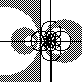

 Язык Common Lisp Второе издание
Guy L. Steele Jr.
Thinking Machines Corporation
с участием
Scott E. Fahlman
Carnegie-Mellon University
Richard P. Gabriel
Lucid, Inc.
Stanford University
David A. Moon
Symbolics, Incorporated
Daniel L. Weinreb
Symbolics, Incorporated
и с участием во втором издании
Kent M. Pitman
Symbolics, Incorporated
Richard C. Waters
Massachusetts Institute of Technology
Jon L White
Lucid, Inc.
© 1984, 1989 Guy L. Steele Jr. Все права защищены.
Опубликовано Digital Press.
Стоит ли удивляться, если под давлением всех упомянутых трудностей конвент был вынужден отойти от искусственной структуры и полной симметрии, которые многомудрый теоретик в угоду своим отвлеченным взглядам предпослал составленной им в кабинете или в воображении конституции?
Пролог ВТОРОЕ ИЗДАНИЕ
Благодарности ВТОРОЕ ИЗДАНИЕ
Благодарности ПЕРВОЕ ИЗДАНИЕ (1984)
1 Вступление
1.1 Цель
1.2 Условные обозначения
2 Типы данных
2.1 Числа
2.2 Строковые символы
2.3 Символы
2.4 Списки и Cons-ячейки
2.5 Массивы
2.6 Хеш-таблицы
2.7 Таблицы символов Lisp парсера (Readtables)
2.8 Пакеты
2.9 Имена файлов
2.10 Потоки
2.11 Состояние для генератора псевдослучайных чисел (Random-States)
2.12 Структуры
2.13 Функции
2.14 Нечитаемые объекты данных
2.15 Пересечение, включение и дизъюнктивность типов
3 Область и продолжительность видимости
4 Спецификаторы типов
4.1 Символы как спецификаторы типов
4.2 Списки как спецификаторы типов
4.3 Предикаты как спецификаторы типов
4.4 Комбинированные спецификаторы типов
4.5 Уточняющие спецификаторы типов
4.6 Аббревиатуры для спецификаторов типов
4.7 Определение новых спецификаторов
4.8 Приведение типов
4.9 Определение типа объекта
4.10 Подбираемый тип
5 Структура программы
5.1 Формы
5.2 Функции
5.3 Формы верхнего уровня
6 Предикаты
6.1 Логические значения
6.2 Предикаты типов данных
6.3 Предикаты равенства
6.4 Логические операторы
7 Управляющие конструкции
7.1 Константы и переменные
7.2 Обобщённые переменные
7.3 Вызов функции
7.4 Последовательное выполнение
7.5 Установка новых связываний переменных
7.6 Операторы условных переходов
7.7 Блоки и выходы
7.8 Формы циклов
7.9 Structure Traversal and Side Effects
7.10 Возврат и обработка нескольких значений
7.11 Динамические нелокальные выходы
8 Макросы
8.1 Определение макроса
8.2 Раскрытие макроса
8.3 Деструктуризация
8.4 Compiler Macros
8.5 Environments
9 Декларации
9.1 Синтаксис декларации
9.2 Спецификаторы деклараций
9.3 Декларация типов для форм
10 Символы
10.1 Список свойств
10.2 Выводимое имя
10.3 Создание символов
11 Пакеты
11.1 Правила согласованности
11.2 Имена пакетов
11.3 Преобразование строк в символы
11.4 Экспортирование и импортирование символов
11.5 Конфликты имён
11.6 Системные пакеты
11.7 Функции и переменные для системы пакетов
12 Числа
12.1 Точность, неявное приведение и явное приведение
12.2 Предикаты для чисел
12.3 Сравнение чисел
12.4 Арифметические операции
12.5 Иррациональные и трансцендентные функции
12.6 Приведение типов и доступ к компонентам чисел
12.7 Логические операции над числами
12.8 Функции для манипуляции с байтами
12.9 Случайные числа
12.10 Параметры реализации
13 Строковые символы
13.1 Свойство строковых символов
13.2 Предикаты для строковых символов
13.3 Код символа
13.4 Преобразование строковых символов
14 Последовательности
14.1 Простые функции для последовательностей
14.2 Объединение, отображение и приведение последовательностей
14.3 Модификация последовательностей
14.4 Поиск элементов последовательностей
14.5 Сортировка и слияние
15 Списки
15.1 Cons-ячейки
15.2 Списки
15.3 Изменение структуры списка
15.4 Замещение выражений
15.5 Использование списков как множеств
15.6 Ассоциативные списки
16 Хеш-таблицы
16.1 Функции для хеш-таблиц
16.2 Функция хеширования
17 Массивы
17.1 Создание массива
17.2 Доступ к массиву
17.3 Информация о массиве
17.4 Функции для битовых массивов
17.5 Указатели заполнения
17.6 Изменение измерений массива
18 Строки
18.1 Доступ к строковым символам
18.2 Сравнение строк
18.3 Создание и манипулирование строками
19 Структуры
19.1 Введение в структуры
19.2 Как использовать defstruct
19.3 Использование автоматически определяемого конструктора
19.4 Опции слотов для defstruct
19.5 Опции defstruct
19.6 Функции-конструкторы с позиционными аргументами
19.7 Структуры с явно заданным типом представления
20 Вычислитель
20.1 Вычисление форм
20.2 Цикл взаимодействия с пользователем
21 Потоки
21.1 Стандартные потоки
21.2 Создание новых потоков
21.3 Операции над потоками
22 Input/Output Ввод/Вывод
22.1 Printed Representation of Lisp Objects
22.2 Input Functions
22.3 Output Functions
22.4 Querying the User
23 File System Interface
23.1 File Names
23.2 Opening and Closing Files
23.3 Renaming, Deleting, and Other File Operations
23.4 Loading Files
23.5 Accessing Directories
24 Miscellaneous Features Разнообразные дополнительные возможности
24.1 The Compiler Компилятор
24.2 Debugging Tools Отладочные средства
24.3 Environment Inquiries Справка о среде
24.4 Identity Function Функция идентичности (identity)
25 Loop
25.1 Introduction
25.2 How the Loop Facility Works
25.3 Parsing Loop Clauses
25.4 User Extensibility
25.5 Loop Constructs
25.6 Iteration Control
25.7 End-Test Control
25.8 Value Accumulation
25.9 Variable Initializations
25.10 Conditional Execution
25.11 Unconditional Execution
25.12 Miscellaneous Features
26 Pretty Printing
26.1 Introduction
26.2 Pretty Printing Control Variables
26.3 Dynamic Control of the Arrangement of Output
26.4 Format Directive Interface
26.5 Compiling Format Control Strings
26.6 Pretty Printing Dispatch Tables
27 Common Lisp Object System
27.1 Programmer Interface Concepts Концепции интерфейса для программиста
27.2 Functions in the Programmer Interface
28 Conditions
28.1 Introduction
28.2 Changes in Terminology
28.3 Survey of Concepts
28.4 Program Interface to the Condition System
28.5 Predefined Condition Types
Библиография
Голосование X3J13
Символы
Colophon
[Далее]